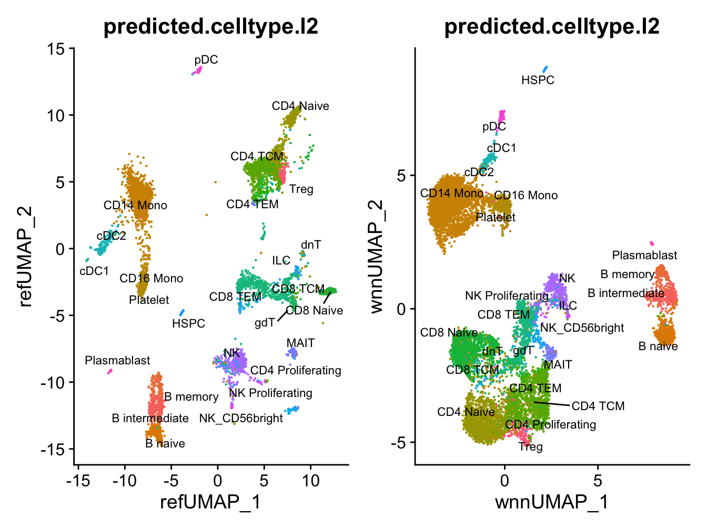

Chapter 6 Cell type annotation
We annotate the clusters below. Note that you could also annotate the dataset using supervised mapping pipelines or automated web tool, Azimuth.
To annotate cell types in the dataset we can transfer cell labels from an existing PBMC reference dataset using tools in the Seurat package. See the Seurat reference mapping vignette for more information.
We’ll use an annotated PBMC reference dataset from Hao et al. (2020), available for download here: https://atlas.fredhutch.org/data/nygc/multimodal/pbmc_multimodal.h5seurat
Note that the SeuratDisk package is required to load the reference dataset. Installation instructions for SeuratDisk can be found here.
# download reference annotation
wget https://atlas.fredhutch.org/data/nygc/multimodal/pbmc_multimodal.h5seuratlibrary(SeuratDisk)
# load PBMC reference
reference <- LoadH5Seurat("../pbmc_data/pbmc_multimodal.h5seurat")
DefaultAssay(pbmc) <- "SCT"
# transfer cell type labels from reference to query
transfer_anchors <- FindTransferAnchors(
reference = reference, query = pbmc,
reference.reduction="spca", normalization.method = "SCT",
dims = 1:50 )
# MapQuery() is a wrapper around three functions: TransferData(), IntegrateEmbeddings(), and ProjectUMAP()
pbmc <- MapQuery(
anchorset = transfer_anchors,
query = pbmc,
reference = reference,
refdata = list(
celltype.l1 = "celltype.l1",
celltype.l2 = "celltype.l2",
predicted_ADT = "ADT"
),
reference.reduction = "spca", # reference has different types of reduction performed, pca, spca, umap ,etc.
reduction.model = "wnn.umap",
transferdata.args=list(),
integrateembeddings.args = list(),
projectumap.args = list()
)# plot on reference data space
p1<-DimPlot(pbmc, reduction = "ref.umap", group.by = "predicted.celltype.l2", label = TRUE, label.size = 3 ,repel = TRUE)
# plot on wnn space
p2<-DimPlot(pbmc, reduction = "wnn.umap", group.by = "predicted.celltype.l2", label = TRUE, label.size = 3 ,repel = TRUE)
p1 + p2 & NoLegend() & theme(plot.title = element_text(hjust = 0.5))

Figure 6.1: Clusters for annotated cell types